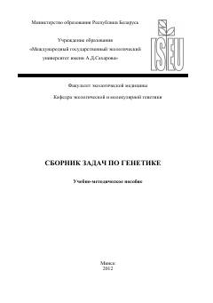

СЗGenetika fanidan masalalar yechish bo'yicha amaliy o'quv qo'llanma.
Ushbu o'quv-uslubiy qo'llanma umumiy va ekologik genetika kursi bo'yicha amaliy mashg'ulotlar uchun mo'ljallangan bo'lib, monogibrid va digibrid chatishtirish, genlar o'zaro ta'siri hamda populyatsiya genetikasiga oid masalalar va ularning yechish usullarini o'z ichiga oladi. Kitobda talabalar uchun nazariy tushunchalar, misollar va mustaqil yechish uchun masalalar keltirilgan.